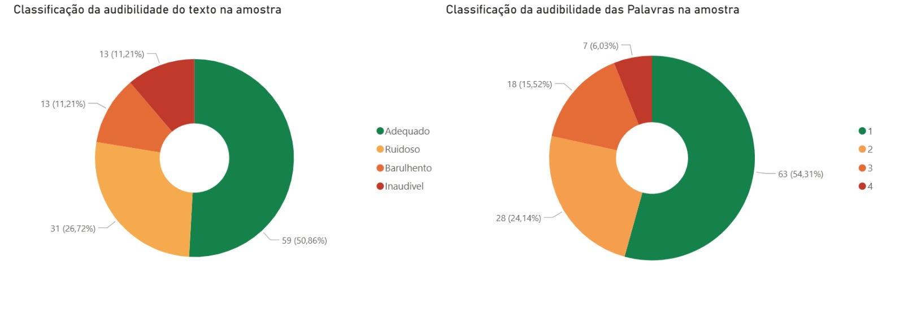
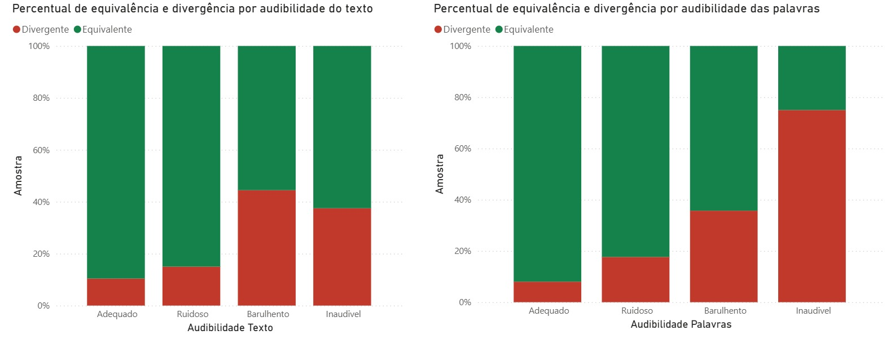
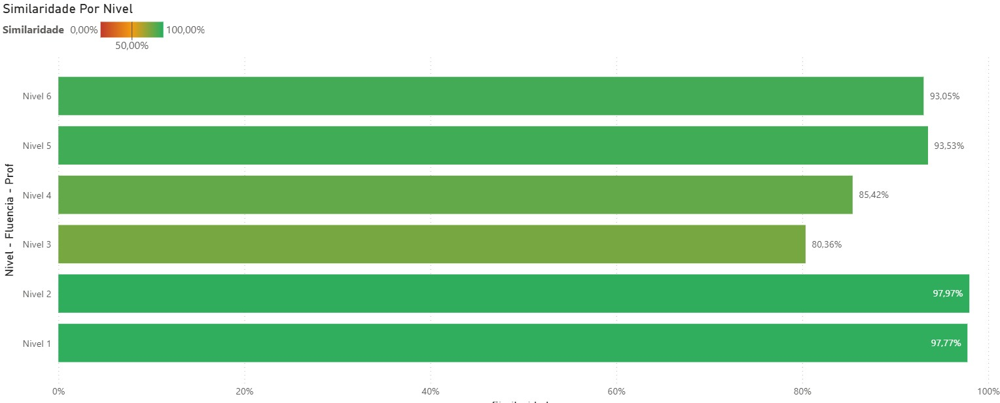
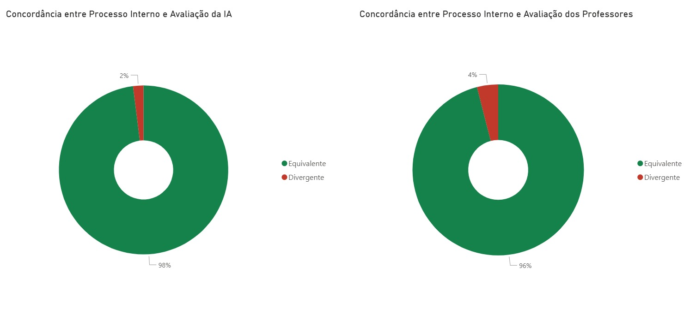
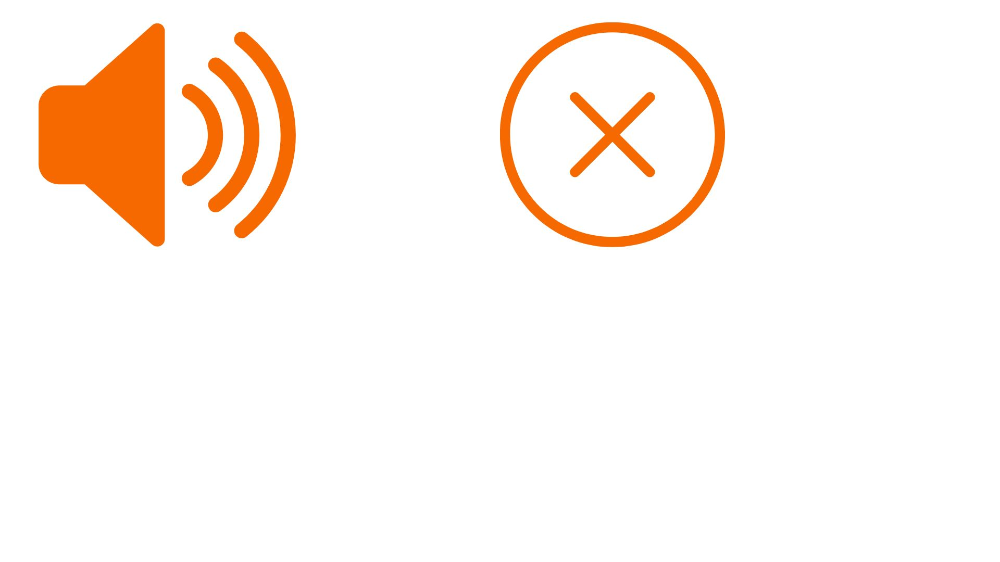

Resultados da correção automática dos áudios por IA, comparada à correção dos professores, e as melhorias em desenvolvimento.
Em uma amostra de 10,54% dos estudantes do 2º ano.




Ferramenta de teste de ambiente: validação de ruídos externos, proximidade do microfone e qualidade geral do áudio.
